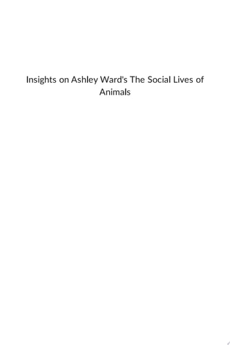
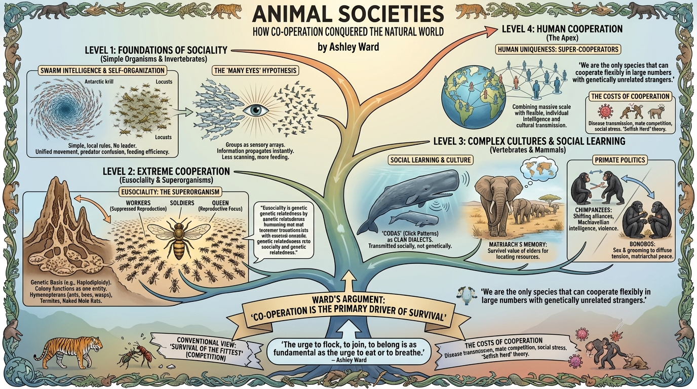

isbn-13: 9781669366751
Audible
AI Generated Summary
Generated by gemini-3-pro-preview

Animal Societies: How Co-Operation Conquered the Natural World examines the evolutionary mechanics and biological imperatives that drive animals to live in groups. Ashley Ward, a professor of animal behavior, argues against the popular conception of evolution as strictly a competitive “survival of the fittest,” positing instead that cooperation is a primary driver of survival and biological success. The text is structured taxonomically and thematically, progressing from simple aggregations of invertebrates to the complex cultural structures of primates and humans.
Key Points:
The Universality of Social Living: Ward asserts that sociality is not an anomaly but the dominant strategy for life on Earth. While the popular imagination focuses on predators and aggression, the biological reality is that most successful species rely on group living to mitigate threats, locate resources, and rear offspring.
- Quote: “The urge to flock, to join, to belong is as fundamental as the urge to eat or to breathe. It is the defining characteristic of the most successful species on the planet.” (Introduction)
Mechanisms of Swarm Intelligence: The book analyzes simple organisms, such as Antarctic krill and locusts, to demonstrate “self-organization.” These animals do not follow a leader; rather, they follow simple, local rules regarding the position of their neighbors. This results in complex, unified group movements that confuse predators and maximize feeding efficiency without requiring high-level cognition.
The “Many Eyes” Hypothesis: In discussing fish shoals and bird flocks, the author explores information transfer. Groups function as sensory arrays; once one individual detects a threat or food source, the information propagates through the group almost instantly. This allows individuals to spend less time scanning for danger and more time feeding.
Eusociality and the Superorganism: The text details the extreme cooperation found in hymenopterans (ants, bees, wasps) and termites. These societies function as “superorganisms” where individual reproductive rights are suppressed in favor of the colony’s queen. Ward explains the genetic basis for this (haplodiploidy) but notes that eusociality has also evolved in species with standard genetics, such as termites and naked mole rats.
Social Learning and Culture: A significant portion of the book is dedicated to mammals, specifically whales, elephants, and primates. Ward presents evidence of animal “culture”—defined as information and behaviors transmitted socially rather than genetically.
- Example: Sperm whales communicate using “codas” (click patterns) specific to their clans, essentially functioning as dialects that segregate groups culturally.
- Example: African elephants rely on the matriarch’s memory to locate water during droughts, demonstrating the survival value of respecting elders within a social hierarchy.
The Costs of Cooperation: The author maintains an objective view of social living by outlining its downsides, including increased transmission of parasites and disease, competition for mates, and the stress of social hierarchies. He details how the “selfish herd” theory applies, where individuals seek the center of a group to use their neighbors as living shields against predators.
Primate Politics: The analysis of chimpanzees and bonobos highlights the roots of human political behavior. Chimpanzee societies are characterized by shifting alliances, Machiavellian intelligence, and violence, whereas bonobos utilize sex and grooming to diffuse tension and maintain distinct matriarchal peace.
Human Uniqueness: The book concludes by situating humans within this biological framework. Ward argues that humans are “super-cooperators” who have managed to combine the massive scale of insect societies with the individual intelligence and cultural transmission of primates. However, he notes that human cooperation is often parochial, favoring the “in-group” while displaying aggression toward “out-groups.”
- Quote: “We are the only species that can cooperate flexibly in large numbers with genetically unrelated strangers.” (Chapter 10)
Further Reading
- The Selfish Gene by Richard Dawkins – Explores the gene-centric view of evolution that underpins much of the theory regarding altruism and cooperation.
- Mutual Aid: A Factor of Evolution by Peter Kropotkin – A foundational historical text arguing that cooperation is as vital to evolution as competition.
- Mama’s Last Hug: Animal Emotions and What They Tell Us about Ourselves by Frans de Waal – A deep dive into primate social intelligence, empathy, and conflict resolution.
- SuperCooperators: Altruism, Evolution, and Why We Need Each Other to Succeed by Martin Nowak and Roger Highfield – A mathematical and biological look at the mechanisms of cooperation.
- Blueprint: The Evolutionary Origins of a Good Society by Nicholas Christakis – Examines how our genetic heritage shapes human social networks and societal structures.